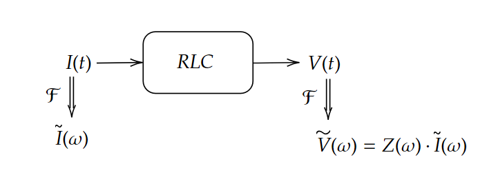
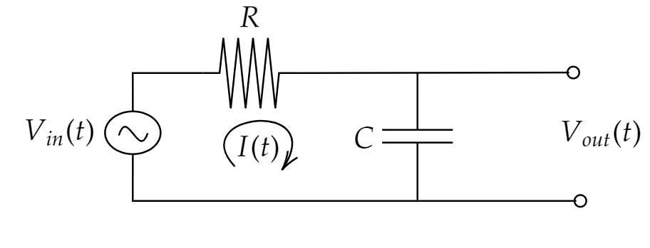
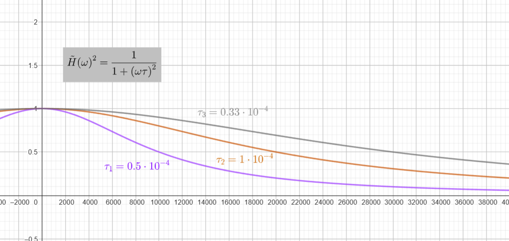
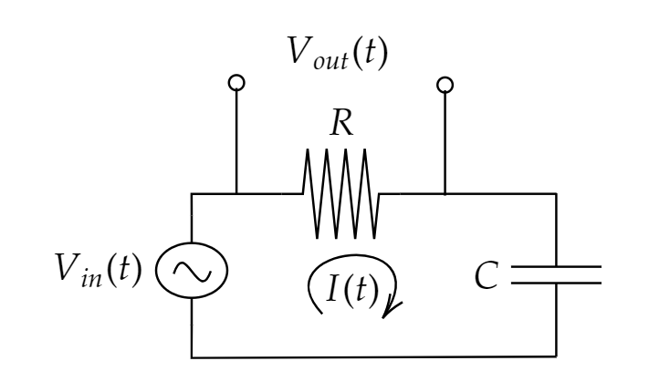

מעגלי RC#
כדוגמה מובילה נתחיל לחקור מעגלי RLC ונבין איך אנחנו יכולים לאפיין אותם עם החוקים שפיתחנו עד עכשיו ניקח את החוקים שאנחנו מכירים מחשמל. אם מודדים מתח במקביל לרכיבים מקבלים:
חוק אוהם - \(V_{R}\left(t\right)=R\cdot I\left(t\right)\)
קבל - \(V_{C}\left(t\right)=\frac{1}{C}\cdot Q\left(t\right)=\frac{1}{C}\cdot\intop_{-\infty}^{t}I\left(\tau\right)d\tau\)
חוק לנץ - \(V_{L}\left(t\right)=L\frac{d}{dt}I\left(t\right)\)
אפשר להסתכל על הנוסחאות הללו במחרב התדר:
\(\tilde{V_{R}}\left(\omega\right)=R\cdot\tilde{I}\left(\omega\right)\Rightarrow Z_{R}=R\)
\(\tilde{V_{C}}\left(\omega\right)=\frac{1}{i\omega C}\tilde{I}\left(\omega\right)\Rightarrow Z_{C}=\frac{1}{i\omega C}\)
\(\tilde{V_{L}}\left(\omega\right)=i\omega L\tilde{I}\left(\omega\right)\Rightarrow Z_{L}=i\omega L\)
קיבלנו שכל אחר מהרכיבים האלו הוא מערכת LTI שממירה זרם למתח 
קיבלנו שהעכבה (אימפדנס) \(Z\left(\omega\right)\) היא מקרה פרטי של פונקציית תמסורת ושרכיבי RLC הם מערכות LTI
רכיב |
\(-h\left(t\right)\) |
\(Z\left(\omega\right)=\tilde{H}\left(\omega\right)\) |
|---|---|---|
R |
\(R\delta\left(t\right)\) |
\(R\) |
L |
\(L\frac{d}{dt}\delta\left(t\right)\) |
\(i\omega L\) |
C |
\(\frac{1}{C}\cdot\intop_{-\infty}^{t}\delta\left(\tau\right)d\tau=\frac{1}{C}\theta\left(t\right)\) |
\(\frac{1}{i\omega C}\) |
תזכורת - חוקי קירכהוף#
חוק הצומת - סכום הזרמים בכל צומת הוא 0
חוק המתחים - סכום המתחים על פני לולאה הוא 0
כדי להשתמש בחוקים האלו אנו מניחים כי:
המויכים אידיאליים (חסרי התנגדות)
אורך הרכיבים קצר ביחס לאורך הגל של המתח - בקורס הבא לומדים על קוי תמסורת
השדה שלנו משמר \(\nabla\times\vec{E}=0\) -כלומר אין שינוי זמני בשדה המגנטי
אין אגירת מטען באף צומת במעגל
דוגמה ראשונה - מעגל RC#
 נשתמש בחוק קירכהוף למתחים ונקבל כי:
נעבור למרחב התדר
וקיבלנו את פונקציית התמסורת:
ואם נסמן את הזמן האופייני \(\tau=RC\) נקבל:
נשים לב שקיבלנו מערכת שמעבירה תדרים נמוכים אבל לא תדרים גבוהים למערכת לינארית כזאת נקרא “מסנן מעביר נמוכים” או בשם המוכר יותר Low Pass Filter (LPF)
הצגה ב-dB#
מעבר למתמטיקה, נוסחאות ואינטואיציה לפעמים צריך למצוא דרך נוחה להציג ולכתוב נתונים. מהנדסים (ואני ממליץ גם לכם) משתמשים ב-dB או בשם היות מוכר שלו דציבל. זאת דרך למדוד גדלים בסקאלה לוגריתמית בעלת בסיס 10. באופן כללי כאשר אנו רושמים dB זה לעשות \(10\log_{10}\left(\frac{size}{ref}\right)\) כלומר אנחנו מציגים בסקאלה לוגריתמית את הגודל חסר היחידות שלנו. חשוב תמיד לציין מה הרפרנס שביחס אליו אנחנו מודדים. ולכן הרבה פעמים מציינים את זה מיד אחרי הסימן dB. דוגמאות יעזרו להבין:
\(dB=dB_{Watt}\) |
\(dBm=dB_{mWatt}\) |
\(\frac{P}{1[Watt]}\) |
\(\frac{V}{1[Volt]}\) |
|---|---|---|---|
\(10\) |
\(40\) |
\(10\) |
\(\sqrt{10}\) |
\(20\) |
\(50\) |
\(100\) |
\(10\) |
\(30\) |
\(60\) |
\(1000\) |
\(\sqrt{1000}\) |
\(3\) |
\(33\) |
\(2\) |
\(\sqrt{2}\) |
\(-3\) |
\(27\) |
\(\frac{1}{2}\) |
\(\frac{1}{\sqrt{2}}\) |
\(-10\) |
\(20\) |
\(0.1\) |
\(\sqrt{0.1}\) |
\(-13\) |
\(17\) |
\(0.05\) |
\(\sqrt{0.05}\) |
\(-16\) |
\(14\) |
\(0.025\) |
\(\sqrt{0.025}\) |
\(-120\) |
\(-90\) |
\(10^{-12}\) |
\(10^{-6}\) |
שימו לב שאנחנו תמיד מציינים את הרפרנס ביחס אליו אנחנו מודדים! אם לא מציינים כלום כנראה שמתכוונים ל-Watt ואם רושמים dBm אז כנראה ל-mW למה לנו להשתמש בסקאלה הזו?
ניתן לייצג טווח עוצמות גדול
במקום להכפיל אנחנו מחברים
כל החושים שלנו הם לוגריתמיים (יחסיים)
לדוגמה בפונקציית התמסורת של מעגל ה-RC שקיבלנו:
אנחנו מקבלים שעל כל הכפלה של \(\omega\) יש ירידה של 6dB. זה נקרא 6dB לאוקטבה אנחנו רוצים פילטר אופטימלי. כלומר אחד שהוא 0dB בתחום מסויים ואז צונח ל-\(-\infty\) בבת אחת. איך נקבל פילטר חד יותר?
נשרשר כמה פילטרים אחד אחרי השני
נבנה פילטר מורכב יותר מלחתחילה
תכנון מסנן שמע#
נרצה לתכנן מעגל RC שמסנן את כל התדרים שאנחנו לא שומעים. כלומר על תדר מעל 20kHz. נסו להשתמש ב-applet למעלה כדי לתכנן פילטר כזה.  כמו שרואים בתמונה זה לא מאוד מוצלח. או שאתה מסנן תדרים שאתה רוצה או שאתה נותן לעוד תדרים לעבור
באופן כללי שמתכננים מסנן (filter) חשוב לשים לב לתכונות הבאות:
חדות - כמה חד המעבר מ”העברה” ל”ניחות”
תדר קטעון \(\omega_{c}\)
כמה הוא באמת מעביר בחלק שהוא מעביר \(\left|\tilde{H}\left(\omega\right)\right|\approx1\)
כמה הוא מנחית בתחום תדרי הניחות
מעגל RC כ-LPF#
נרצה להבין קצת יותר טוב מה קורה ובשביל זה נחפש את פונקציית התגובה להלם. יש לנו שתי דרכים לעשות את זה:
לעשות טרנספורם פורייה הפוך ל\(\tilde{H}\left(\omega\right)\) - \(h\left(t\right)=\frac{1}{\sqrt{2\pi}}\intop_{-\infty}^{\infty}\tilde{H}\left(\omega\right)e^{i\omega t}dt\)
לפתור את המשוואה הדיפרנציאלית עבור מתח נכנס בצורת דלתא
נזכיר כי:
וגם:
ולכן:
ונקבל:
אנחנו מחפשים פתרון קוזאלי ולכן מאוד כדאי שיהיה \(V_{out}\left(t\right)=\theta\left(t\right)\cdot f\left(t\right)\) נשתמש ב-\(\frac{d}{dt}V_{out}\left(t\right)=\delta\left(t\right)\cdot f\left(t\right)+\theta\left(t\right)\cdot\frac{d}{dt}f\left(t\right)\) ונקבל:
נקבל מזה שני תנאים:
\(f\left(0\right)=\frac{1}{RC}\)
\(RC\frac{d}{dt}f\left(t\right)+f\left(t\right)=0\)
הפתרון הוא כמובן \(f\left(t\right)=\frac{1}{RC}e^{-\frac{t}{RC}}\) ולכן נקבל כי:
נשים לב שגם כאן יש לנו יחסי פורייה יפים. ואם פונקציית התגובה להלם דועכת מהר (צרה) אז רוחב הסרט גבוה (רחב) ולהפך
נשים לב שעבור תדרים גבוהים:
נקבל שפונקציית התגובה להלם נראית כמו אינטגרציה בזמן!
מעגל RC כ-HPF#
 הפעם נקבל:
באופן לא מפתיע קיבלנו 1 מינוס מה שקיבלנו קודם. “המתח מתחלק על הרכיבים” גם כאן נין לעשות קירוב לתדרים גבוהים ולקבל:
כלומר מעגל גזירה!
מה היא פונקציית התגובה להלם?
האינטואיציה של זה היא שאנחנו בהתחלה מודדים את ההלם ואז אחרכך יש זרם שלילי בנגד בגלל הפריקה של הקבל